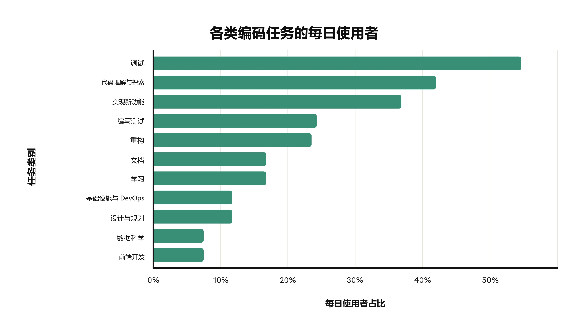
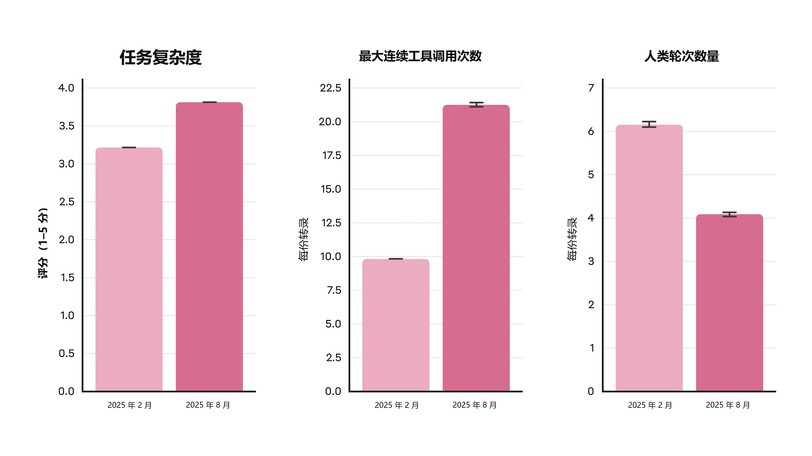

AI 如何改变 Anthropic 的工作方式
📖 中文摘要
专业术语注解
全栈化（full-stack）：个人能胜任超出原本专业范围的多领域任务委派（delegation）：把任务交给 AI 独立完成并信任其结果生产率（productivity）：单位时间内产出的工作量认知开销（cognitive overhead）：理解非自己编写的代码所需的额外思考成本小修小补（papercut）：改善体验但常被搁置的小型修复任务📄 中文全文
- 类别： 社会影响（Societal Impacts）
- 来源： https://www.anthropic.com/research/how-ai-is-transforming-work-at-anthropic
社会影响（Societal Impacts） 2025 年 12 月 2 日 AI 正在如何改变我们的工作方式？我们此前关于 AI 经济影响的研究着眼于整个劳动力市场，涵盖了各种不同的职业。但如果我们更深入地研究一些最早采用 AI 技术的群体——也就是我们自己——会怎样呢？
将镜头转向内部，2025 年 8 月，我们调查了 132 名 Anthropic 工程师和研究员，进行了 53 次深入的定性访谈，并研究了内部 Claude Code 的使用数据，以了解 AI 的使用正在如何改变 Anthropic 内部的工作。我们发现，AI 的使用正在从根本上改变软件开发者工作的性质，既带来了希望，也引发了担忧。
我们的研究揭示了一个正在经历重大变革的工作场所：工程师们完成的工作量大幅增加，变得更具「全栈」（full-stack）能力（能够胜任超出其常规专长领域的任务），学习速度和迭代速度加快，并着手处理以往被忽视的任务。这种广度的扩展也让人们开始思考其中的权衡——一些人担心这可能意味着失去更深层次的技术能力，或变得不那么有能力有效监督 Claude 的输出；另一些人则拥抱这种以更开阔、更高层次进行思考的机会。一些人发现，与 AI 协作更多意味着与同事协作变少；还有一些人则担心自己最终会不会被自动化而丢掉工作。
我们认识到，在一家正在构建 AI 的公司里研究 AI 的影响意味着我们处于一种特权地位——我们的工程师能够提前接触最前沿的工具，工作在一个相对稳定的领域，而且他们本身就是正在影响其他行业的 AI 变革的推动者。尽管如此，我们仍认为总体而言，研究并发布这些发现是有价值的，因为 Anthropic 内部工程师身上正在发生的变化，仍可能是更广泛社会变革的一个具有启发性的先兆。我们的发现暗示了一些可能值得各行各业及早关注的挑战和考量（不过关于注意事项请参见附录中的「局限性」一节）。在收集这批数据时，Claude Sonnet 4 和 Claude Opus 4 是可用的最强模型，而能力仍在持续进步。
更强的 AI 带来了生产力上的好处，但也引发了关于如何维持专业技术能力、保留有意义的协作、以及为不确定的未来做好准备的问题——这个未来可能需要在 AI 增强的工作场所中采用新的学习、指导和职业发展方式。我们在下方「展望未来」一节中讨论了我们为探索这些问题而正在采取的一些初步举措。我们还在最近关于AI 相关经济政策构想的博客文章中探讨了可能的政策回应。
主要发现
在本节中，我们简要总结来自调查、访谈和 Claude Code 数据的发现。我们在下文各节中提供详细的发现、方法和注意事项。
调查数据 1. Anthropic 工程师和研究员最常使用 Claude 来修复代码错误和了解代码库。 调试和代码理解是最常见的用途（图 1）。 2. 人们报告称 Claude 的使用量在增加，生产力也在提升。 员工自我报告称，他们在 60% 的工作中使用 Claude，并实现了 50% 的生产力提升，与去年同期相比增长了 2-3 倍。这种生产力提升表现为每个任务类别所用时间略有减少，但产出量大幅增加（图 2）。 3. 27% 的 Claude 辅助工作属于「没有它就不会去做」的任务，例如扩展项目规模、制作锦上添花的工具（如交互式数据仪表盘），以及如果手工完成不划算的探索性工作。 4. 大多数员工频繁使用 Claude，同时报告称只能将 0-20% 的工作「完全委托」给它。 Claude 是一个常驻协作者，但使用它通常涉及积极的监督和验证，尤其是在高风险的工作中——而不是完全不需要验证地移交任务。
定性访谈 1. 员工正在形成 AI 委托的直觉。 工程师倾向于委托那些容易验证的任务，在这些任务上他们「能相对容易地嗅探检查正确性」；低风险的任务（例如「一次性的调试或研究代码」）；或枯燥的任务（「我越是对任务感到兴奋，就越可能不用 Claude」）。许多人描述了一种信任递进的过程：从简单任务开始，逐渐委托更复杂的工作——尽管他们目前仍保留大多数设计或「品味」类任务，但随着模型改进，这一边界正在被重新协商。 2. 技能面正在扩展到更多领域，但有些技能得到的练习变少了。 Claude 使人们能够将技能扩展到软件工程的更多领域（「我可以非常熟练地处理前端、事务性数据库……而以前我会害怕碰这些东西」），但一些员工也矛盾地担心更深层技能的萎缩——这些技能既用于编写代码，也用于批判性地审查代码——「当产出变得如此容易和快速时，你越来越难真正花时间去学习某样东西。」 3. 与编码手艺的关系正在改变。 一些工程师拥抱 AI 辅助并专注于成果（「我以为我真的很喜欢写代码，但我想实际上我只是喜欢写代码所带来的东西」）；另一些人则表示「（写代码）的某些部分我确实怀念。」 4. 工作场所的社交动态可能正在改变。 Claude 如今是过去常常向同事请教的问题的第一站——一些人报告称，由此导致的指导和协作机会减少了。（「我喜欢与人共事，现在『需要』他们少了，这让人难过……更资浅的同事不再经常来问我问题了。」） 5. 职业演变与不确定性。 工程师报告称工作正转向更高层次的管理 AI 系统，并报告了显著的生产力提升。然而，这些变化也引发了关于软件工程这一职业长期走向的问题。一些人对未来表达了矛盾的情绪：「短期内我感到乐观，但长期来看，我认为 AI 最终会做所有事情，让我和其他许多人变得无关紧要。」另一些人则强调真正的不确定性，只表示「很难说」几年后他们的角色会是什么样子。
Claude Code 使用趋势 1. Claude 正在以越来越自主的方式处理越来越复杂的任务。 六个月前，Claude Code 在需要人工输入之前大约能自主完成 10 个动作。现在，它通常能处理约 20 个动作，完成更复杂的工作流程所需的人工引导更少了（图 3）。工程师越来越多地使用 Claude 处理复杂任务，如代码设计/规划（使用占比从 1% 增至 10%）和实现新功能（从 14% 增至 37%）（图 4）。 2. Claude 修复了大量「小麻烦」（papercuts）。 8.6% 的 Claude Code 任务涉及修复提升工作质量的小问题，例如为可维护性重构代码（也就是「修小麻烦」），人们说这类工作通常会被降低优先级。这些小修复可能累积成更大的生产力和效率提升。 3. 每个人都在变得更「全栈」。 不同的团队以不同的方式使用 Claude，通常用于增强其核心专长——安全团队用它分析不熟悉的代码，对齐与安全团队用它构建其数据的前端可视化，等等（图 5）。
调查数据
我们调查了来自整个组织的 132 名 Anthropic 工程师和研究员，了解他们如何使用 Claude，以更好地理解他们在日常工作中究竟是如何使用它的。我们通过内部沟通渠道发布调查问卷，并直接联系了代表研究与产品职能的多个不同团队的员工。我们在附录中包含了「局限性」一节，提供更多方法论细节，并且我们分享了我们的调查问题，以便其他人评估我们的方法并加以调整用于他们自己的研究。
人们使用 Claude 处理哪些编码任务？
我们请接受调查的工程师和研究员对各种类型编码任务使用 Claude 的频率进行评分，例如「调试」（使用 Claude 帮助修复代码中的错误）、「代码理解」（让 Claude 解释现有代码，帮助人类用户理解代码库）、「重构」（使用 Claude 帮助重构现有代码）和「数据科学」（例如让 Claude 分析数据集并制作柱状图）。
以下是使用频率最高的日常任务。大多数员工（55%）每天都会使用 Claude 进行调试。42% 的人每天使用 Claude 进行代码理解，37% 的人每天使用 Claude 实现新功能。频率较低的任务是高层设计/规划（很可能是因为这些是人们倾向于保留在人类手中的任务），以及数据科学和前端开发（很可能是因为它们总体上是不太常见的任务）。这大致与「Claude Code 使用趋势」一节中报告的 Claude Code 使用数据分布一致。

图 1：各类编码任务（y 轴）的每日使用者比例（x 轴）。使用与生产力
员工自我报告称，12 个月前，他们在 28% 的日常工作中使用 Claude，并从中获得了 +20% 的生产力提升；而现在，他们在 59% 的工作中使用 Claude，平均获得了 +50% 的生产力提升。（这与我们在整个工程组织采用 Claude Code 后观察到的每位工程师每天合并的拉取请求——即成功纳入代码的变更——增加 67% 大致吻合。）同比比较相当惊人——这表明两项指标在一年内都增长了两倍以上。使用量与生产力之间也密切相关，在分布的极端端，14% 的受访者通过使用 Claude 将生产力提高了 100% 以上——这些人是我们内部的「重度用户」。
需要为这一发现（以及下文其他自我报告的生产力发现）加上限定说明：生产力很难精确衡量（更多局限性请参见附录）。AI 研究非营利组织 METR 最近的研究表明，在非常熟悉的代码库上使用 AI 工作的资深开发者高估了 AI 带来的生产力提升。话虽如此，METR 确定的导致生产力低于预期的因素（例如 AI 在大型复杂环境中表现较差，或在需要大量隐性知识/上下文的环境中表现较差）与我们的员工所说他们_不会_委托给 Claude 的任务类型高度吻合（见下文AI 委托方法）。我们_跨任务_自我报告的生产力提升，可能反映了员工正在发展战略性 AI 委托技能——这一点在 METR 的研究中没有被考虑。
当我们询问员工，在他们目前使用 Claude 的任务类别中，Claude 如何影响他们在该任务类别上花费的总时间和工作产出量时，一个有趣的生产力模式浮现出来。在几乎所有任务类别中，我们都看到花费时间的净减少，以及产出量的更大净增加：
 图 2：按任务（y 轴）划分的对时间花费（左图）和产出量（右图）的影响。每个图的 x 轴对应自我报告的时间花费或产出量的减少（负值）、增加（正值）或无变化（垂直虚线），这是相对于不使用 Claude 而言的、对 Claude 辅助任务类别的影响。误差线显示 95% 置信区间。圆圈面积与每个评分点的回答数量成正比。仅包含报告在各自任务类别中使用 Claude 的受访者。
图 2：按任务（y 轴）划分的对时间花费（左图）和产出量（右图）的影响。每个图的 x 轴对应自我报告的时间花费或产出量的减少（负值）、增加（正值）或无变化（垂直虚线），这是相对于不使用 Claude 而言的、对 Claude 辅助任务类别的影响。误差线显示 95% 置信区间。圆圈面积与每个评分点的回答数量成正比。仅包含报告在各自任务类别中使用 Claude 的受访者。
然而，当我们深入挖掘原始数据时，我们看到节省时间的回答聚集在两个相反的极端——有些人在 Claude 辅助的任务上花费了显著_更多_的时间。
这是为什么呢？人们通常解释说，他们必须做更多调试和清理 Claude 生成的代码（例如「当我把自己 vibe 编码进死胡同的时候」），并且因为代码不是自己写的，承担了更多理解 Claude 代码的认知负担。一些人提到在赋能意义上在任务上花费了更多时间——一个人说，使用 Claude 帮助他们「坚持做以前会立刻放弃的任务」；另一个人说，它帮助他们做更彻底的测试，并在新的代码库中进行更多学习和探索。看来一般而言，体验到时间节省的工程师可能是那些为 Claude 划定可快速验证任务范围的人，而花费更多时间的人可能是在调试 AI 生成的代码，或在 Claude 需要更多指导的领域工作。
我们的数据也无法明确显示报告的时间节省被重新投入到哪里——是投入额外的工程任务、非工程任务、与 Claude 交互或审查其输出，还是工作之外的活动。我们的任务分类框架并未涵盖工程师分配时间的全部方式。此外，时间节省可能反映了自我报告中的感知偏差。要厘清这些效应，还需要进一步研究。
产出量的增加则更直接、更显著；所有任务类别都有更大的净增加。当我们考虑到人们是在报告任务类别（如整体的「调试」）而非单个任务时，这种模式就说得通了——也就是说，人们可以在调试这个类别上花费略少的时间，同时总体产出更多的调试成果。生产力很难直接衡量，但这份自我报告数据表明，AI 在 Anthropic 主要通过更大的产出量来提升生产力。
Claude 促成新的工作 我们好奇的一件事是：Claude 是否在促成定性意义上的新型工作，还是说 Claude 辅助的工作最终也会被员工完成（尽管速度可能更慢）？
员工估计，27% 的 Claude 辅助工作如果没有它就不会去做。工程师提到使用 AI 来扩展项目规模、做锦上添花的事（例如交互式数据仪表盘）、有用但繁琐的工作如文档和测试，以及手工做不划算的探索性工作。正如一个人解释的那样，他们现在可以修复更多此前损害工作质量的「小麻烦」，例如重构结构糟糕的代码，或构建「帮助更快完成另一项任务的小工具」。我们也在使用数据分析中寻找了这一点，并且发现8.6% 的 Claude Code 任务涉及「小麻烦修复」。
另一位研究员解释说，他们同时运行了许多个 Claude 实例，各自探索解决问题的不同方法：
人们倾向于把超强模型想象成单一实例，就像得到一辆更快的汽车。但拥有一百万匹马……让你能够测试一大堆不同的想法……当你有那种额外的广度去探索时，这是令人兴奋的，也更有创造力。
正如我们将在后续章节中看到的，这些新工作通常涉及工程师处理其核心专长之外的任务。
有多少工作可以完全委托给 Claude？
尽管工程师经常使用 Claude，但超过一半的人表示，他们只能将 0-20% 的工作「完全委托」给 Claude。（值得注意的是，受访者对「完全委托」的理解可能有所不同——从完全不需要验证的任务，到可靠到只需轻度监督的任务。）在解释原因时，工程师们描述说他们会与 Claude 积极、迭代地协作，并验证其输出——尤其是在代码质量标准至关重要的复杂任务或高风险领域。这表明工程师倾向于与 Claude 密切合作并检查其工作，而不是不加验证地移交任务，而且他们对「完全委托」的标准设得很高。
定性访谈
虽然这些调查发现揭示了显著的生产力提升和变化中的工作模式，但它们也引发了这样的问题：工程师们日常究竟是如何体验这些变化的？为了理解这些指标背后的人性维度，我们对 53 名参与调查的 Anthropic 工程师和研究员进行了深入访谈，以更深入地了解他们对工作场所这些变化的思考和感受。
AI 委托方法
工程师和研究员正在制定各种策略，以便在工作中有效利用 Claude。人们通常委托的任务具有以下特点：
在用户上下文之外_且_复杂度低： 「我在上下文很少但对整体复杂度也较低的事情上使用 Claude。」
「我遇到的大多数基础设施问题都不难，可以由 Claude 处理……我不太懂 Git 或 Linux……Claude 很好地弥补了我在这些领域经验的不足。」
容易验证： 「对于所有验证成本与创建成本相比不算大的事情，它都_非常_出色。」 定义明确或自成一体： 「如果项目的某个子组件与其余部分充分解耦，我就会让 Claude 试一下。」 代码质量不是关键： 「如果是扔掉的调试代码或研究代码，就直接交给 Claude。如果它在概念上有难度，或需要某种非常特殊的调试注入，或者是一个设计问题，我就自己做。」 重复或枯燥： 「我越是对任务感到兴奋，就越可能不用 Claude。而如果我感到很大的抵触……我常常发现更容易的做法是就这个任务和 Claude 展开对话。」
在我们的调查中，人们平均表示，44% 的 Claude 辅助工作是他们自己不乐意做的任务。 提示比执行更快： 「对于一个我预计 10 分钟内能完成的任务……我可能不会费心去用 Claude。」
「冷启动问题可能是目前最大的障碍。所谓冷启动，我指的是有很多关于我们团队代码库如何运作的内在信息只有我有，而 Claude 默认情况下不会有……我可能会花时间迭代出完美的提示词，[但]我只会自己去做。」
我们的员工在委托决策中提到的这些因素，与一项 METR 的外部研究中发现的可解释 AI 相关生产力放缓的因素（例如开发者对代码库的高度熟悉、大型复杂仓库）相似。我们的访谈中这些委托标准的趋同表明，合适的任务选择是 AI 生产力提升的一个重要因素（在未来的生产力研究中应加以仔细控制）。
信任但验证
许多用户描述了他们的 Claude 使用中的一种递进过程，涉及随时间推移委托越来越复杂的任务：「起初我用 AI 工具问一些关于 Rust 编程语言的基础问题……最近，我所有的编码都用 Claude Code 了。」
一位工程师将这种信任递进比作采用其他技术，比如谷歌地图（Google Maps）：
一开始我只在不知道的路线用（谷歌地图）……这就像我用 Claude 写我不懂的 SQL，但不让它写我懂的 Python。然后我开始在基本知道、但可能不知道最后一公里的路线上用谷歌地图……今天我一直用谷歌地图，哪怕日常通勤也是。如果它说走另一条路，我就照做，并相信它考虑了所有选项……我现在用 Claude Code 的方式也类似。
对于是在自己的专长领域之内还是之外使用 Claude，工程师们意见不一。有些人将其用于「外围」领域以节省实现时间；另一些人则更喜欢熟悉的领域，在那里他们可以验证输出（「我使用 Claude 的方式是，我仍然完全理解它在做什么」）。一位安全工程师强调了经验的重要性：Claude 曾提出一个「以危险的方式很聪明的方案，就是那种非常有天赋的初级工程师可能会提出的东西」。也就是说，只有具备判断力和经验的用户才能识别出这类方案的问题。
另一些工程师两种任务都用 Claude，要么以实验性的方式（「我基本上总是让 Claude 先对所有编码问题做第一次尝试」），要么根据自己对任务的专业程度来调整方法：
我既把它用于我专业核心的任务（作为加速器，在那里我知道会发生什么，可以有效地引导代理），也用于略微超出我专业领域的事情，在那里我大致知道会发生什么，但 Claude 能够填补我在记忆或对特定定义的熟悉度上的空白。 如果是我特别精通的事情，我会更强势，告诉 Claude 它需要追查什么。如果我不确定，我常常请它充当专家，给我选项和见解，告诉我应该考虑和研究什么。
人们为自己保留哪些任务？
人们一致表示，他们不会用 Claude 处理涉及高层或战略性思考的任务，或需要组织背景或「品味」的设计决策。一位工程师解释说：「我通常保留高层思考和设计。从新功能开发到调试，任何我能委托的我都委托。」这反映在我们的调查数据中，数据显示设计和规划任务的生产力提升最少（图 2）。不过，许多人把委托边界描述为一个「移动的目标」，随着模型的改进而不断重新协商（下文中的 Claude Code 使用数据显示，现在代码设计/规划的使用比六个月前相对更多了）。
技能转变
新能力……
调查发现 27% 的 Claude 辅助工作原本不会完成，这反映了一个更广泛的模式：工程师使用 AI 在其核心专长之外工作。许多员工报告完成了以前超出其专长的工作——后端工程师构建用户界面；研究员制作可视化。一位后端工程师描述了通过和 Claude 迭代来构建复杂 UI 的过程：「它做得比我以往任何时候都好。我自己是做不出来的，肯定无法按时完成……（设计师们）说『等等，这是你做的？』我说『不，是 Claude 做的——我只是给它提示。』」
工程师报告称「变得更全栈……我可以非常熟练地处理前端、事务性数据库或 API 代码，而以前我会害怕碰那些我不太专业的东西。」这种能力扩展带来了更紧密的反馈循环和更快的学习——一位工程师说，一个「几周的过程」（包括构建、安排会议和迭代）可以变成「几个小时的工作会话」，同事在场提供实时反馈。
总的来说，人们对他们快速原型、并行化工作、减少苦力劳动以及总体提升抱负水平的新能力感到振奋。一位资深工程师告诉我们：「这些工具肯定让初级工程师更高效，也让他们对承接的项目类型更大胆。」一些人还表示，使用 Claude 的「激活能量」降低了，使他们更容易战胜拖延症，「大幅降低了我想要开始攻克一个问题所需的能量，因此我愿意去处理更多额外的事情。」
……以及更少的动手练习
与此同时，一些人担心「随着（自己）委托更多，技能会萎缩」，以及会失去手工解决问题过程中发生的附带（或「附带损害之外的」）学习：
如果你亲自去调试一个难题，你会花时间阅读文档和代码，其中有些并不能直接帮助你解决问题——但在这整个过程中，你在构建关于系统如何运作的模型。而现在这种事情少了很多，因为 Claude 可以直接把你带到问题面前。 我以前会探索每一个配置来了解工具能做什么，但现在我依赖 AI 告诉我如何使用新工具，所以我缺乏这方面的专业知识。在和队友的对话中，我以前能瞬间回想起来，而现在我得去问 AI。 使用 Claude 有可能跳过这样的环节：我先通过解决一个简单实例来学习如何执行任务，然后再挣扎着去解决更复杂的实例。
一位资深工程师说，如果自己更资浅，会更担心技能问题：
我主要是在我知道答案应该是什么或应该长什么样的情况下使用 AI。这种能力是我通过「硬核方式」做软件工程培养出来的……但如果我（处在职业生涯的早期），我认为需要付出大量刻意努力才能继续增长自己的能力，而不是盲目接受模型的输出。
编码技能萎缩之所以令人担忧，原因之一是「监督悖论」——如上所述，有效使用 Claude 需要监督，而监督 Claude 恰恰需要那些可能因过度使用 AI 而萎缩的编码技能。一个人说：
说实话，我更担心的是监督和管控问题，而不是我的技能本身……我的技能萎缩或得不到发展，主要会在我安全地使用 AI 完成我关心的任务的能力方面造成问题，而不是在我独立完成这些任务的能力方面。
为了对抗这一点，一些工程师刻意不用 AI 练习：「偶尔，即使我知道 Claude 能搞定一个问题，我也不会让它去做。这有助于我保持敏锐。」
我们还需要那些动手编码技能吗？ 也许软件工程正在向更高层次的抽象迈进，就像过去发生过的那样。早期的程序员在更接近机器的层面上工作——手动管理内存、用汇编语言编写，甚至拨动物理开关来输入指令。随着时间的推移，出现了更高级、更人性化的语言，自动处理复杂的底层操作。也许，特别是在「vibe 编码」兴起的背景下，我们现在正把英语当作一种编程语言。我们的一位员工建议，有志于成为工程师的人「要擅长让 AI（写代码），并专注于学习更高层次的概念和模式。」
少数员工表示，他们觉得这种转变赋予他们在更高层次思考的能力——「关于最终产品和最终用户」，而不仅仅是代码。一个人将当前的转变比作以前必须学习计算机科学中的链表——现在高级编程语言会自动处理这些基础结构。「我很庆幸自己知道怎么做……（但）做那些底层操作在情感上并不特别重要。我更愿意关心代码让我能够做什么。」另一位工程师做了类似的比较，但指出抽象是有代价的——随着向更高级语言迁移，大多数工程师失去了对内存处理的深入理解。
在一个领域持续发展技能可以带来对 Claude 更好的监督和更高效的工作（「我注意到，当我熟悉某样东西时，我往往做得更快」）。但工程师们对这一点是否重要意见不一。一些人保持乐观：
我不太担心技能侵蚀。AI 仍然让我仔细思考问题，并帮助我学习新方法。如果说有什么不同的话，能够更快地探索和测试想法在某些领域加速了我的学习。
另一个人则更务实：「我的软件工程师技能肯定在萎缩……但如果需要，这些技能还能回来，而且我就是不再需要它们了！」一个人指出，他们只是失去了像做图表这样不太重要的技能，而「那种关键代码我仍然写得很好」。
也许最有趣的是，一位工程师挑战了这个前提：「『生疏了』这种说法依赖于一个假设：编码总有一天会回到 Claude 3.5 之前的样子。而我不认为会这样。」
软件工程的技艺与意义
工程师们对是否怀念动手编码态度迥异。一些人感到真正的失落——「对我来说这是一个时代的终结——我已经编程 25 年了，在这个技能集上感到胜任是我职业满足感的核心部分。」另一些人则担心自己不会享受这种新的工作性质：「整天给 Claude 写提示并不那么有趣或有成就感。戴上耳机、进入状态、亲手实现东西要有趣和充实得多。」
一些人直接面对这种权衡并接受了它：「（写代码）的某些部分我确实怀念——重构代码时进入那种禅意的心流状态，但总的来说，我现在高效得多，我很乐意放弃那些。」
一个人说，与 Claude 迭代_更有趣_，因为他对它的反馈可以比对人更挑剔。另一些人则更关注结果。一位工程师说：
我本以为到了这个时候我会感到害怕或无聊……但实际上这两种感觉我都没有。相反，我很兴奋，因为我能做的事情多得多。我以为我真的很喜欢写代码，但实际上我只是喜欢写代码带来的东西。
人们是拥抱 AI 辅助还是哀悼动手编码的失去，似乎取决于他们在软件工程中最看重哪些方面。
工作场所中变化的社交动态
一个比较突出的主题是，Claude 已经成为那些曾经求助于同事的问题的第一站。「我现在总体上问的问题多多了，但其中大约 80-90% 是问 Claude 的，」一位员工指出。这创造了一种过滤机制：Claude 处理常规询问，而同事则处理更复杂、更具战略性或上下文更重、超出 AI 能力范围的问题（「它让我对（我的团队）的依赖减少了 80%，（但）最后那 20% 至关重要，我会去找他们谈」）。人们也会和 Claude「碰撞想法」，就像与人类协作者互动一样。
大约一半人报告称团队协作模式没有变化。一位工程师说，他仍然在与人开会、分享背景、选择方向，他认为在不久的将来仍然会有大量协作，但「不再是做你标准的专注工作，而是你会和很多 Claude 对话。」
然而，其他人描述了与同事互动减少的情况（「我和 Claude 共事的程度远远超过和我任何同事。」）。一些人欣赏社交摩擦的减少（「占用同事的时间我不会再感到内疚」）。另一些人则抵制这种变化（「我其实不喜欢『你问过 Claude 了吗』成为常见回应。我非常喜欢和人面对面共事，也高度重视这一点」），或者怀念旧的工作方式：「我喜欢和人共事，现在『需要』他们少了，这让人难过。」几个人指出了对传统师徒关系动态的影响，因为「Claude 可以向初级员工提供大量指导」，而不是由资深工程师来做。一位资深工程师说：
让人难过的是，更资浅的人不再经常来问我问题了，尽管他们的问题确实得到了更有效的解答，学习也更快。
职业不确定性与适应 许多工程师描述他们的角色正在从编写代码转变为管理 AI。工程师越来越把自己看作「AI 代理的管理者」——有些人已经「经常同时运行至少几个（Claude）实例」。一个人估计自己的工作已经变成「70% 以上是代码审查者/修订者，而不是净新增代码编写者」，另一个人则把「为 1 个、5 个或 100 个 Claude 的工作承担责任」视为自己未来角色的一部分。
从长期来看，职业不确定性是普遍的。工程师们将这些变化视为更广泛行业转型的先兆，许多人表示「很难说」几年后他们的职业生涯会是什么样子。一些人表达了短期乐观与长期不确定之间的冲突。「短期内我感到乐观，但长期来看，我认为 AI 最终会做所有事情，让我和其他许多人变得无关紧要，」一个人如是说。另一些人则说得更尖锐：「感觉就像我每天来上班就是为了让自己失业。」
一些工程师更乐观。一个人说：「我为初级开发人员感到担忧，但我也看到初级开发人员可能是对新技术最渴求的人。我总体对这个职业的发展轨迹非常乐观。」他们认为，尽管经验不足的工程师有可能发布有问题的代码，但更好的 AI 护栏、更多内置教育资源，以及从错误中自然学习，将帮助这个领域随着时间推移而适应。
我们询问人们如何设想自己的未来角色，以及是否有任何适应策略。一些人提到计划进一步专业化（「培养有意义地审查 AI 工作的技能将需要更长时间，也需要更多专业化」），一些人预计未来将更专注于人际和战略性工作（「我们会花更多时间达成共识，让 AI 花更多时间在实现上」）。一个人说，他专门用 Claude 来做职业发展，让它对自己的工作和领导技能提供反馈（「我学习东西的速度，甚至不用完全学会就能高效工作的速度，完全改变了。我几乎觉得天花板对我而言被打破了」）。
总体而言，许多人承认存在深度不确定性：「我非常不确定未来哪些具体技能会有用。」一位团队负责人说：「没人知道会发生什么……重要的是保持很强的适应能力。」
Claude Code 使用趋势
调查和访谈数据显示，Claude 使用量的增加正在帮助人们更快地工作并承担新类型的工作，尽管这也伴随着 AI 委托和技能发展方面的张力。不过，自我报告的数据只讲述了故事的一部分。为了补充这一点，我们还分析了 Anthropic 各团队的实际 Claude 使用数据。由于调查受访者报告称他们的使用大部分是 Claude Code，我们使用我们的隐私保护分析工具分析了 2025 年 2 月和 8 月来自 Claude Code 的 20 万份内部记录。
用更少的监督攻克更难的问题 过去六个月，Claude Code 的使用已转向更难、更自主的编码任务（图 3）： * 员工正在用 Claude Code 处理越来越复杂的任务。 我们以 1-5 分制估算每条记录的任务复杂度，其中 1 分对应「基本编辑」，5 分对应「需要人类专家数周/数月工作的专家级任务」。平均任务复杂度从 3.2 上升到 3.8。* 为了说明分数之间的差异：平均 3.2 分的任务包括「排查 Python 模块导入错误」，而平均 3.8 分的任务包括「实现并优化缓存系统」。 * *Claude Code 每条记录的最大连续工具调用次数增加了 116%。 工具调用对应 Claude 使用外部工具采取的动作，例如编辑文件或运行命令。Claude 现在可以在无需人工干预的情况下串联 21.2 次独立工具调用，而六个月前是 9.8 次。 * 人工轮次数量减少了 33%。 每条记录的平均人工轮次从 6.2 次减少到 4.1 次，这表明与六个月前相比，完成给定任务所需的人工输入更少了。

图 3. 2025 年 8 月与 2025 年 2 月之间 Claude Code 使用的变化（x 轴）。平均任务复杂度随时间增加（左图），每条记录的平均最大连续工具调用次数随时间增加（中图），人工轮次数量随时间减少（右图）。误差线显示 95% 置信区间。数据表明，人们越来越多地将更多自主权委托给 Claude。这些使用数据证实了调查数据：工程师将越来越复杂的工作委托给 Claude，而 Claude 需要更少的监督。这似乎很可能是观察到的生产力提升的驱动因素。
任务分布
我们将 Claude Code 记录归类为一种或多种编码任务类型，研究了不同任务的使用在过去六个月中如何演变：
 图 4. 各类编码任务（y 轴）占总记录数百分比（x 轴）的分布。我们将 6 个月前（粉色）的分布与现在（紫色）进行比较。y 轴按 2025 年 2 月的频率排序。
图 4. 各类编码任务（y 轴）占总记录数百分比（x 轴）的分布。我们将 6 个月前（粉色）的分布与现在（紫色）进行比较。y 轴按 2025 年 2 月的频率排序。
根据使用数据估计的总体任务频率分布与自我报告的任务频率分布大致吻合。2025 年 2 月至 8 月之间最显著的变化是，现在使用 Claude 实现新功能（14.3% → 36.9%）和进行代码设计或规划（1.0% → 9.9%）的记录比例大幅增加。Claude Code 任务相对分布的这种转变可能表明 Claude 在这些更复杂任务上变得更好了，但也可能反映了团队如何针对不同工作流程采用 Claude Code 的变化，而非绝对工作量的增加（更多局限性请参见附录）。
修复小麻烦
我们从调查中发现，工程师现在花更多时间做小的质量改进；与此一致，目前 8.6% 的 Claude Code 任务被归类为「小麻烦修复」。这些任务既包括创建性能可视化工具和为可维护性重构代码等较大的任务，也包括创建终端快捷方式等较小的任务。这可能有助于工程师报告的生产力提升（处理以前被忽视的质量改进，随着时间推移可能带来更高的效率），并可能减少日常工作中的摩擦和挫败感。
各团队的任务差异
为了研究各团队的任务差异，我们改进了分类方法，将 8 月的每条记录归入单一主要编码任务，并按内部团队（y 轴）拆分数据。堆叠条形图显示了每个团队的编码任务构成：
 图 5. 每条水平条代表一个团队（y 轴），分段显示该团队 Claude Code 使用中不同编码任务（x 轴）所占的比例，按编码任务着色（图例）。顶部的条（「所有团队」）代表总体分布。
图 5. 每条水平条代表一个团队（y 轴），分段显示该团队 Claude Code 使用中不同编码任务（x 轴）所占的比例，按编码任务着色（图例）。顶部的条（「所有团队」）代表总体分布。
「所有团队」条显示了总体分布，最常见的任务是构建新功能、调试和代码理解。这为团队间的比较提供了基线。
值得注意的团队特定模式： 1. 预训练（Pre-training） 团队（帮助训练 Claude 的团队）经常使用 Claude Code 构建新功能（54.6%），其中很大一部分是运行额外实验。 2. 对齐与安全（Alignment & Safety） 和后训练（Post-training） 团队使用 Claude Code 做最多前端开发（分别为 7.5% 和 7.4%），通常是用于创建数据可视化。 3. 安全（Security） 团队经常使用 Claude Code 进行代码理解（48.9%），具体来说是分析并理解代码库不同部分的安全影响。 4. 非技术员工经常使用 Claude Code 进行调试（51.5%），例如排查网络问题或 Git 操作，以及用于数据科学（12.7%）；Claude 似乎在弥合技术知识差距方面很有价值。
这些团队特定模式中有许多展示了我们在调查和访谈中观察到的同样的能力扩展：促成了团队成员以前既没有时间也没有技能去做的新型工作。例如，预训练团队运行了大量额外实验，非技术员工也能够修复代码中的错误。而且，尽管数据表明团队确实将 Claude 用于其核心任务（例如，基础设施团队最常将 Claude Code 用于基础设施和 DevOps 工作），但 Claude 也常常增强他们的核心任务（例如，研究员使用 Claude 做前端开发，以更好地可视化他们的数据）。这表明 Claude 正在让每个人在工作中变得更全栈。
展望未来
在过去一年里，Anthropic 员工大大增加了对 Claude 的使用，不仅用它加速现有工作，还用它学习新的代码库、减少苦力劳动、扩展到新的领域，并处理以前被忽视的改进。随着 Claude 变得更自主、更有能力，工程师们正在发现使用 AI 委托的新方式，同时也在摸索未来需要哪些技能。这些转变带来了明显的生产力和学习收益，同时也伴随着对软件工程工作长期走向的真正不确定性。AI 会不会像过去的软件工程转型那样——从低级到高级编程语言，或从个人贡献者到管理者，正如几位工程师所说的那样？还是会更进一步？
现在还为时过早——Anthropic 内部有很多早期采用者，形势瞬息万变，而且我们的发现可能目前无法推广到其他组织或情境（更多局限性请参见附录）。这项研究本身就反映了这种不确定性：发现是细致入微的，没有出现单一的共识或明确的方向。但它确实提出了一个问题：我们怎样才能深思熟虑地、有效地驾驭这些变化。
为了跟进这项初步工作，我们正在采取几个步骤。我们正在与 Anthropic 的工程师、研究员和管理层沟通，以应对所提出的机遇和挑战。这包括研究我们如何把团队聚在一起、如何彼此协作，如何支持职业发展，以及/或者如何为 AI 增强的工作建立最佳实践（例如，以我们的 AI 熟练度框架为指导）。我们还在把这项研究扩展到工程师之外，以了解 AI 转型如何影响整个组织的角色，并支持 CodePath 等外部组织为 AI 辅助的未来调整计算机科学课程。展望未来，我们还在考虑一些可能随着 AI 能力进步而越来越重要的结构性方法，例如组织内角色演进或技能再培训的新路径。
我们预计，随着思考的成熟，将在 2026 年分享更多具体计划。Anthropic 是负责任的工作场所转型的实验室；我们不仅要研究 AI 如何改变工作，还要试验如何深思熟虑地驾驭这种转型，先从我们自己开始。
Bibtex
如果你想引用这篇文章，可以使用以下 Bibtex 键：
@online{huang2025aiwork,
author = {Saffron Huang and Bryan Seethor and Esin Durmus and Kunal Handa and Miles McCain and Michael Stern and Deep Ganguli},
title = {How AI Is Transforming Work at Anthropic},
date = {2025-12-02},
year = {2025},
url = {https://anthropic.com/research/how-ai-is-transforming-work-at-anthropic/},
}
致谢 Saffron Huang 领导了该项目，设计并执行了调查、访谈和数据分析，绘制了图表并撰写了博客文章。Bryan Seethor 共同设计了调查和访谈，共同领导了调查和访谈数据的收集，分析了访谈主题，参与了写作，并管理了项目时间表。Esin Durmus 为实验设计做出了贡献，并在整个过程中提供了详细的指导和反馈。Kunal Handa 为访谈过程提供了基础设施支持。Deep Ganguli 提供了关键的指导和组织支持。所有作者在整个过程中都提供了详细的指导和反馈。
此外，我们感谢 Ruth Appel、Sally Aldous、Avital Balwit、Drew Bent、Zoe Blumenfeld、Miriam Chaum、Jack Clark、Jake Eaton、Sarah Heck、Kamya Jagadish、Jen Martinez、Peter McCrory、Jared Mueller、Christopher Nulty、Sasha de Marigny、Sarah Pollack、Hannah Pritchett、Stuart Ritchie、David Saunders、Alex Tamkin、Janel Thamkul、Sar Warner 和 Heather Whitney 提供的有益想法、讨论、反馈和支持。感谢 Casey Yamaguma 为图表绘制插图。我们也感谢 Anton Korinek、Ioana Marinescu、Silvana Tenreyro 和 Neil Thompson 富有成效的评论和讨论。
附录
局限性
我们的调查发现受到若干方法论局限性的影响。我们通过便利抽样和目的性抽样（以确保广泛的组织代表性）选择受访者。我们在多个内部 Slack 频道发布了调查问卷，收到 68 份回复，我们还从组织架构图中挑选了研究部门和产品部门的 20 个多样化团队，直接联系每个团队 5-10 人（共联系 207 人），最终 64 份回复的回复率为 31%。我们访谈了最先回复的 53 人。这里可能存在一定的选择偏差，因为那些特别投入使用 Claude 或持强烈观点（正面或负面）的人可能更倾向于回复，而经历较为中立的人可能代表性不足。
此外，回复可能受到社会期望偏差的影响（由于回复不是匿名的，而且所有参与者都是 Anthropic 员工，受访者可能夸大了对 Claude 影响的正面评价）和近因偏差的影响（要求参与者回忆 12 个月前的生产力和使用模式，容易受到记忆扭曲的影响）。此外，如前所述，生产力总体上非常难以估算，因此这些自我报告应持保留态度。这些自我报告的感知应与我们更客观的 Claude Code 使用数据一起解读，未来的研究将受益于匿名数据收集和经过更严格验证的测量工具。
我们的 Claude Code 分析在不同时间段采用比例抽样，这意味着我们只能衡量任务分布的相对变化，而不能衡量工作量的绝对变化。例如，当我们报告功能实现占 Claude Code 使用的比例从 14% 增加到 37% 时，这并不一定意味着正在完成更多的功能工作总量。
最后，这项研究是在 2025 年 8 月进行的，当时 Claude Sonnet 4 和 Claude Opus 4 是我们最先进的模型。鉴于 AI 发展的快速步伐，随着新模型的推出，我们观察到的模式可能已经发生了变化。
相关内容
了解更多关于 Claude 数学能力的信息
Claude 的一个未发布的研究版本在与黎曼猜想相关的问题上取得了进展。它改进了黎曼 zeta 函数满足该猜想的零点比例的一个长期未破的下界，将其从 41.6% 提高到 67.2%。 了解更多
用 Claude 发现密码学弱点
密码学算法。第一个攻击显著削弱了 HAWK——一种为未来量子计算机能够破解现有标准的世界而构建的数字签名方案。第二个攻击发现了一种攻击轮数缩减的 AES（使用最广泛的对称密码）的新方法。 了解更多
Project Pilot：AI 能操控无人机吗？
我们与 Andon Labs 合作，开发了一系列新的评估来测试 AI 模型使用飞行无人机的能力，最终形成了一个新的基准：Drone-Bench。 了解更多
▸ 英文原文（点击展开）
How AI is transforming work at Anthropic
- Category: Societal Impacts
- Source: https://www.anthropic.com/research/how-ai-is-transforming-work-at-anthropic
Societal Impacts
How AI is transforming work at Anthropic
Dec 2, 2025 How is AI changing the way we work? Our previous research on AI’s economic impacts looked at the labor market as a whole, covering a variety of different jobs. But what if we studied some of the earliest adopters of AI technology in more detail—namely, us? Turning the lens inward, in August 2025 we surveyed 132 Anthropic engineers and researchers, conducted 53 in-depth qualitative interviews, and studied internal Claude Code usage data to find out how AI use is changing things at Anthropic. We find that AI use is radically changing the nature of work for software developers, generating both hope and concern. Our research reveals a workplace facing significant transformations: Engineers are getting a lot more done, becoming more “full-stack” (able to succeed at tasks beyond their normal expertise), accelerating their learning and iteration speed, and tackling previously-neglected tasks. This expansion in breadth also has people wondering about the trade-offs—some worry that this could mean losing deeper technical competence, or becoming less able to effectively supervise Claude’s outputs, while others embrace the opportunity to think more expansively and at a higher level. Some found that more AI collaboration meant they collaborated less with colleagues; some wondered if they might eventually automate themselves out of a job. We recognize that studying AI’s impact at a company building AI means representing a privileged position—our engineers have early access to cutting-edge tools, work in a relatively stable field, and are themselves contributing to the AI transformation affecting other industries. Despite this, we felt it was on balance useful to research and publish these findings, because what’s happening inside Anthropic for engineers may still be an instructive harbinger of broader societal transformation. Our findings imply some challenges and considerations that may warrant early attention across sectors (though see the Limitations section in the Appendix for caveats). At the time this data was collected, Claude Sonnet 4 and Claude Opus 4 were the most capable models available, and capabilities have continued to advance. More capable AI brings productivity benefits, but it also raises questions about maintaining technical expertise, preserving meaningful collaboration, and preparing for an uncertain future that may require new approaches to learning, mentorship, and career development in an AI-augmented workplace. We discuss some initial steps we’re taking to explore these questions internally in the Looking Forward section below. We also explored potential policy responses in our recent blog post on ideas for AI-related economic policy.
Key findings
In this section, we briefly summarize the findings from our survey, interviews, and Claude Code data. We provide detailed findings, methods, and caveats in the subsequent sections below. Survey data 1. Anthropic engineers and researchers use Claude most often for fixing code errors and learning about the codebase. Debugging and code understanding are the most common uses (Figure 1). 2. People report increasing Claude usage and productivity gains. Employees self-report using Claude in 60% of their work and achieving a 50% productivity boost, a 2-3x increase from this time last year. This productivity looks like slightly less time per task category, but considerably more output volume (Figure 2). 3. 27% of Claude-assisted work consists of tasks that wouldn't have been done otherwise , such as scaling projects, making nice-to-have tools (e.g. interactive data dashboards), and exploratory work that wouldn't be cost-effective if done manually. 4. Most employees use Claude frequently while reporting they can “fully delegate” 0-20% of their work to it. Claude is a constant collaborator but using it generally involves active supervision and validation, especially in high-stakes work—versus handing off tasks requiring no verification at all.
Qualitative interviews 1. Employees are developing intuitions for AI delegation. Engineers tend to delegate tasks that are easily verifiable, where they “can relatively easily sniff-check on correctness”, low-stakes (e.g. “throwaway debug or research code”), or boring (“The more excited I am to do the task, the more likely I am to not use Claude”). Many describe a trust progression, starting with simple tasks and gradually delegating more complex work—and while they’re currently keeping most design or “taste” tasks, this boundary is being renegotiated as models improve. 2. Skillsets are broadening into more areas, but some are getting less practice. Claude enables people to broaden their skills into more areas (of software engineering (“I can very capably work on front-end, or transactional databases... where previously I would've been scared to touch stuff”), but some employees are also concerned, paradoxically, about the atrophy of deeper skillsets required for both writing and critiquing code—“When producing output is so easy and fast, it gets harder and harder to actually take the time to learn something.” 3. Changing relationship to coding craft. Some engineers embrace AI assistance and focus on outcomes (“I thought that I really enjoyed writing code, and I think instead I actually just enjoy what I get out of writing code”); others say that “there are certainly some parts of [writing code] that I miss.” 4. Workplace social dynamics may be changing. Claude is now the first stop for questions that used to go to colleagues—some report fewer mentorship and collaboration opportunities as a result. (“I like working with people and it's sad that I ‘need’ them less now… More junior people don't come to me with questions as often.”) 5. Career evolution and uncertainty. Engineers report shifting toward higher-level work managing AI systems and report significant productivity gains. However, these changes also raise questions about the long-term trajectory of software engineering as a profession. Some express conflicting feelings about the future: “I feel optimistic in the short term but in the long term I think AI will end up doing everything and make me and many others irrelevant.” Others emphasize genuine uncertainty, saying only that it was “hard to say” what their roles might look like in a few years’ time.
Claude Code usage trends 1. Claude is handling increasingly complex tasks more autonomously. Six months ago, Claude Code would complete about 10 actions on its own before needing human input. Now, it generally handles around 20, needing less frequent human steering to complete more complex workflows (Figure 3). Engineers increasingly use Claude for complex tasks like code design/planning (1% to 10% of usage) and implementing new features (14% to 37%) (Figure 4). 2. Claude fixes a lot of “papercuts”. 8.6% of Claude Code tasks involve fixing minor issues that improve quality of life, like refactoring code for maintainability (that is, “fixing papercuts”) that people say would typically be deprioritized. These small fixes could add up to larger productivity and efficiency gains. 3. Everyone is becoming more “full-stack”. Different teams use Claude in different ways, often to augment their core expertise—Security uses it to analyze unfamiliar code, Alignment & Safety use it to build front-end visualizations of their data, and so on (Figure 5).
Survey data
We surveyed 132 Anthropic engineers and researchers from across the organization about their Claude use, to better understand how exactly they were using it day-to-day. We distributed our survey through internal communication channels and direct outreach to employees across diverse teams representing both research and product functions. We have included a Limitations section in the Appendix with more methodological details, and we are sharing our survey questions so others can evaluate our approach and adapt it for their own research.
What coding tasks are people using Claude for?
We asked the surveyed engineers and researchers to rate how often they used Claude for various types of coding tasks, such as “debugging” (using Claude to help fix errors in code), “code understanding” (having Claude explain existing code to help the human user understand the codebase), “refactoring” (using Claude to help restructure existing code), and “data science” (e.g. having Claude analyze datasets and make bar charts).
Below are the most common daily tasks. Most employees (55%) used Claude for debugging on a daily basis. 42% used Claude everyday for code understanding, and 37% used Claude everyday for implementing new features. The less-frequent tasks were high level design/planning (likely because these are tasks people tend to keep in human hands), as well as data science and front-end development (likely because they are overall less common tasks). This roughly aligns with the Claude Code usage data distribution reported in the “Claude Code usage trends” section.
Figure 1: Proportion of daily users (x-axis) for various coding tasks (y-axis).
Usage and productivity
Employees self-reported that 12 months ago, they used Claude in 28% of their daily work and got a +20% productivity boost from it, whereas now, they use Claude in 59% of their work and achieve +50% productivity gains from it on average. (This roughly corroborates the 67% increase in merged pull requests—i.e. successfully incorporated changes to code—per engineer per day we saw when we adopted Claude Code across our Engineering org.) The year-on-year comparison is quite dramatic—this suggests a more than 2x increase in both metrics in one year. Usage and productivity are also strongly correlated, and at the extreme end of the distribution, 14% of respondents are increasing their productivity by more than 100% by using Claude—these are our internal “power users.”
To caveat this finding (and other self-reported productivity findings below), productivity is difficult to precisely measure (see Appendix for more limitations). There is recent work from METR, an AI research nonprofit, showing that experienced developers working with AI on highly familiar codebases overestimated their productivity boost from AI. That being said, the factors that METR identified as contributing to lower productivity than expected (e.g. AI performing worse in large, complex environments, or where there’s a lot of tacit knowledge/context necessary) closely correspond to the types of tasks our employees said they don’t delegate to Claude (see AI delegation approaches, below). Our productivity gains, self-reported across tasks, might reflect employees developing strategic AI delegation skills—something not accounted for in the METR study.
An interesting productivity pattern emerges when asking employees, for task categories where they currently use Claude, how it affects their overall time spent and work output volume in that task category. Across almost all task categories, we see a net decrease in time spent, and a larger net increase in output volume:
Figure 2: Impact on time spent (left panel) and output volume (right panel) by task (y-axis). The x-axis on each plot corresponds to either a self-reported decrease (negative values), increase (positive values) or no change (vertical dashed line) in time spent or output volume for categories of Claude-assisted tasks, compared to not using Claude. Error bars show 95% confidence intervals. Circle area is proportional to the number of responses at each rating point. Only respondents who reported using Claude for each task category are included.
However, when we dig deeper into the raw data, we see that the time saving responses cluster at opposite ends—some people spend significantly more time on tasks that are Claude-assisted.
Why is that? People generally explained that they had to do more debugging and cleanup of Claude’s code (e.g. “when I vibe code myself into a corner”), and shoulder more cognitive overhead for understanding Claude’s code since they didn’t write it themselves. Some mentioned spending more time on tasks in an enabling sense—one said that using Claude helps them “persist on tasks that I previously would've given up on immediately”; another said it helps them do more thorough testing and also more learning and exploration in new codebases. It seems that generally, engineers experiencing time savings may be those who are scoping quickly-verifiable tasks for Claude, while those spending more time might be debugging AI-generated code or working in domains where Claude needs more guidance.
It is also not clear from our data where reported time savings are being reinvested—whether into additional engineering tasks, non-engineering tasks, interacting with Claude or reviewing its output, or activities outside of work. Our task categorization framework does not capture all the ways engineers might allocate their time. Additionally, the time savings may reflect perception biases in self-reporting. Further research is needed to disentangle these effects.
Output volume increases are more straightforward and substantial; there is a larger net increase across all task categories. This pattern makes sense when we consider that people are reporting on task categories (like “debugging” overall) rather than individual tasks—i.e. people can spend slightly less time on debugging as a category while producing much more debugging output overall. Productivity is very hard to measure directly, but this self-reported data suggests that AI enables increased productivity at Anthropic primarily through greater output volume.
Claude enabling new work One thing we were curious about: Is Claude enabling qualitatively new kinds of work, or would Claude-assisted work have been done by employees eventually (albeit potentially at a slower rate)? Employees estimated that 27% of their Claude-assisted work wouldn't have been done without it. Engineers cited using AI for scaling projects, nice-to-haves (e.g. interactive data dashboards), useful but tedious work like documentation and testing, and exploratory work that wouldn't be cost-effective manually. As one person explained, they can now fix more “papercuts” that previously damaged quality of life, such as refactoring badly-structured code, or building “small tools that help accomplish another task faster.” We looked for this in our usage data analysis as well, and found that 8.6% of Claude Code tasks involve ‘papercut fixes.’ Another researcher explained that they ran many versions of Claude simultaneously, all exploring different approaches to a problem:
People tend to think about super capable models as a single instance, like getting a faster car. But having a million horses… allows you to test a bunch of different ideas… It’s exciting and more creative when you have that extra breadth to explore. As we'll see in the following sections, this new work often involves engineers tackling tasks outside their core expertise.
How much work can be fully delegated to Claude?
Although engineers use Claude frequently, more than half said they can “fully delegate” only between 0-20% of their work to Claude. (It’s worth noting that there is variation in how respondents might interpret “fully delegate”—from tasks needing no verification at all to those that are reliable enough to require only light oversight.) When explaining why, engineers described working actively and iteratively with Claude, and validating its outputs—particularly for complex tasks or high-stakes areas where code quality standards are critical. This suggests that engineers tend to collaborate closely with Claude and check its work rather than handing off tasks without verification, and that they set a high bar for what counts as “fully delegated.”
Qualitative interviews
While these survey findings reveal significant productivity gains and changing work patterns, they raise questions about how engineers are actually experiencing these changes day-to-day. To understand the human dimension behind these metrics, we conducted in-depth interviews with 53 of the Anthropic engineers and researchers who responded to the survey, to get more insight into how they’re thinking and feeling about these changes in the workplace.
AI delegation approaches
Engineers and researchers are developing a variety of strategies for productively leveraging Claude in their workflow. People generally delegate tasks that are:
Outside the user’s context and low complexity:
“I use Claude for things where I have low context, but think that the overall complexity is also low.”
“The majority of the infra[structure] problems I have are not difficult and can be handled by Claude… I don’t know Git or Linux very well… Claude does a good job covering for my lack of experience in these areas.”
Easily verifiable:
“It's absolutely amazing for everything where validation effort isn't large in comparison to creation effort.”
Well-defined or self-contained:
“If a subcomponent of the project is sufficiently decoupled from the rest, I'll get Claude to take a stab.”
Code quality isn’t critical:
“If it's throwaway debug[ging] or research code, it goes straight to Claude. If it's conceptually difficult or needs some very specific type of debug injection, or a design problem, I do it myself.”
Repetitive or boring:
“The more excited I am to do the task, the more likely I am to not use Claude. Whereas if I'm feeling a lot of resistance… I often find it easier to start a conversation with Claude about the task.”
In our survey, on average people said that 44% of Claude-assisted work consisted of tasks they wouldn't have enjoyed doing themselves.
Faster to prompt than execute:
“[For] a task that I anticipate will take me less than 10 minutes... I'm probably not going to bother using Claude.”
“The cold start problem is probably the biggest blocker right now. And by cold start, I mean there is a lot of intrinsic information that I just have about how my team's code base works that Claude will not have by default… I could spend time trying to iterate on the perfect prompt [but] I’m just going to go and do it myself.”
These factors mentioned by our employees in their decisions about delegation were similar to those found to explain AI-related productivity slowdowns (such as high developer familiarity with codebase, large and complex repositories) in an external study from METR. The convergence on these delegation criteria across our interviews suggests that appropriate task choice is an important factor in AI productivity gains (which should be carefully controlled for in future productivity studies).
Trust but verify
Many users described a progression in their Claude usage that involved delegating increasingly complex tasks over time: “At first I used AI tools with basic questions about Rust programming language... Lately, I've been using Claude Code for all my coding.” One engineer likened the trust progression to adopting other technologies, like Google Maps:
In the beginning I would use [Google Maps] only for routes I didn't know... This is like me using Claude to write SQL that I didn't know, but not asking it to write Python that I did. Then I started using Google Maps on routes that I mostly knew, but maybe I didn't know the last mile... Today I use Google Maps all the time, even for my daily commute. If it says to take a different way I do, and just trust that it considered all options... I use Claude Code in a similar way today. Engineers are split on whether to use Claude within or outside their expertise. Some use it for “peripheral” domains to save implementation time; others prefer familiar territory where they can verify outputs (“I use Claude in such a way where I still have full understanding of what it’s doing”). A security engineer highlighted the importance of experience when Claude proposed a solution that was “really smart in the dangerous way, the kind of thing a very talented junior engineer might propose”. That is, it was something that could only be recognised as problematic by users with judgment and experience. Other engineers use Claude for both types of tasks, either in an experimental way (“I basically always use Claude to take a first crack at any coding problem”), or by adapting their approach depending on their level of expertise in the task: I use the tools for both things that are core to my expertise (as an accelerant, where I know what to expect and can guide the agent effectively), and for things that are slightly outside my area of expertise, where I know roughly what to expect but that Claude is able to fill in the gaps in my memory or familiarity with specific definitions. If it's something that I am particularly versed about, I will be more assertive and tell Claude what it needs to track down. If it's something I'm not sure about I often ask it to be the expert and give me options and insights on things I should consider and research.
What tasks do people keep for themselves?
People consistently said they didn’t use Claude for tasks involving high-level or strategic thinking, or for design decisions that require organizational context or “taste.” One engineer explained: “I usually keep the high-level thinking and design. I delegate anything I can from new feature development to debugging.” This is reflected in our survey data, which showed the least productivity gains for design and planning tasks (Figure 2). Many people described delegation boundaries as a “moving target,” though, regularly renegotiated as models improve (below, the Claude Code usage data shows relatively more coding design/planning usage now than six months ago).
Skill transformations
New capabilities…
The survey finding that 27% of Claude-assisted work wouldn't have been done otherwise reflects a broader pattern: engineers using AI to work outside their core expertise. Many employees report completing work previously outside their expertise—backend engineers building UIs; researchers creating visualizations. One backend engineer described building a complex UI by iterating with Claude: “It did a way better job than I ever would’ve. I would not have been able to do it, definitely not on time... [The designers] were like ‘wait, you did this?’ I said “No, Claude did this - I just prompted it.’” Engineers report “becoming more full-stack… I can very capably work on front-end, or transactional databases, or API code, where previously I would've been scared to touch stuff I'm less of an expert on.” This capability expansion enables tighter feedback loops and faster learning—one engineer said that a “couple week process” of building, scheduling meetings, and iterating could become “a couple hour working session” with colleagues present for live feedback. In general, people were enthused by their new ability to prototype quickly, parallelize work, reduce toil, and generally raise their level of ambition. One senior engineer told us, “The tools are definitely making junior engineers more productive and more bold with the types of projects they will take on.” Some also said that the reduced “activation energy” of using Claude enabled them to defeat procrastination more easily, “dramatically decreas[ing] the energy required for me to want to start tackling a problem and therefore I'm willing to tackle so many additional things.”
…and less hands-on practice
At the same time, some were worried about “skills atrophying as [they] delegate more”, and losing the incidental (or “collateral”) learning that happens during manual problem-solving:
If you were to go out and debug a hard issue yourself, you're going to spend time reading docs and code that isn't directly useful for solving your problem—but this entire time you're building a model of how the system works. There's a lot less of that going on because Claude can just get you to the problem right away. I used to explore every config to understand what the tool can do but now I rely on AI to tell me how to use new tools and so I lack the expertise. In conversations with other teammates I can instantly recall things vs now I have to ask AI. Using Claude has the potential to skip the part where I learn how to perform a task by solving an easy instance, and then struggle to solve a more complicated instance later.
One senior engineer said they’d be more worried about their skills if they were more junior:
I’m primarily using AI in cases where I know what the answer should be or should look like. I developed that ability by doing SWE ‘the hard way’... But if I were [earlier in my career], I would think it would take a lot of deliberate effort to continue growing my own abilities rather than blindly accepting the model output. One reason that the atrophy of coding skills is concerning is the “paradox of supervision”—as mentioned above, effectively using Claude requires supervision, and supervising Claude requires the very coding skills that may atrophy from AI overuse. One person said: Honestly, I worry much more about the oversight and supervision problem than I do about my skill set specifically… having my skills atrophy or fail to develop is primarily gonna be problematic with respect to my ability to safely use AI for the tasks that I care about versus my ability to independently do those tasks. To combat this, some engineers deliberately practice without AI: "Every once in a while, even if I know that Claude can nail a problem, I will not ask it to. It helps me keep myself sharp.”
Will we still need those hands-on coding skills? Perhaps software engineering is moving to higher levels of abstraction, which it has done in the past. Early programmers worked much closer to the machine—manually managing memory, writing in assembly language, or even toggling physical switches to input instructions. Over time, higher-level, more human-readable languages emerged that automatically handled complex, low-level operations. Perhaps, in particular with the rise of “vibe coding”, we’re now moving to English as a programming language. One of our staff suggested that aspiring engineers “get good at having AIs [write code], and focus on learning higher level concepts and patterns.” A few employees said they felt that this shift empowers them to think at a higher level—“about the end product and the end user” rather than just the code. One person described the current shift by comparing it to previously having to learn linked-lists in computer science—fundamental structures that higher-level programming languages now handle automatically. “I’m very glad I knew how to do that... [but] doing those low level operations isn’t particularly important emotionally. I would rather care about what the code allows me to do.” Another engineer made a similar comparison, but noted that abstraction comes at a cost—with the move to higher-level languages, most engineers lost a deep understanding of memory handling. Continuing to develop skills in an area can lead to better supervision of Claude and more efficient work (“I notice that when it's something I'm familiar with, it's often faster for me to do it”). But engineers are divided on whether this matters. Some remain sanguine:
I don't worry too much about skill erosion. The AI still makes me think through problems carefully and helps me learn new approaches. If anything, being able to explore and test ideas more quickly has accelerated my learning in some areas. Another was more pragmatic: “I am for sure atrophying in my skills as a software engineer... But those skills could come back if they ever needed to, and I just don't need them anymore!” One noted they only lost less-important skills like making charts, and “the kind of code that's critical I can still write very well.” Perhaps most interestingly, one engineer challenged the premise: “The ‘getting rusty’ framing relies on an assumption that coding will someday go back to the way it was pre-Claude 3.5. And I don't think it will.”
The craft and meaning of software engineering
Engineers diverge sharply on whether they miss hands-on coding. Some feel genuine loss—“It’s the end of an era for me - I've been programming for 25 years, and feeling competent in that skill set is a core part of my professional satisfaction.” Others worry about not enjoying the new nature of the work: “Spending your day prompting Claude is not very fun or fulfilling. It's much more fun and fulfilling to put on some music and get in the zone and implement something yourself.” Some directly addressed the trade-off and accepted it: “There are certainly some parts of [writing code] that I miss - getting into a zen flow state when refactoring code, but overall I'm so much more productive now that I'll gladly give that up.” One person said that iterating with Claude has been more fun, because they can be more picky with their feedback than with humans. Others are more interested in outcomes. One engineer said:
I expected that by this point I would feel scared or bored… however I don't really feel either of those things. Instead I feel quite excited that I can do significantly more. I thought that I really enjoyed writing code, and instead I actually just enjoy what I get out of writing code. Whether people embrace AI assistance or mourn the loss of hands-on coding seems to depend on what aspects of software engineering they find most meaningful.
Changing social dynamics in the workplace
One of the more prominent themes was that Claude has become the first stop for questions that once went to colleagues. “I ask way more questions [now] in general, but like 80-90% of them go to Claude," one employee noted. This creates a filtering mechanism where Claude handles routine inquiries, leaving colleagues to address more complex, strategic, or context-heavy issues that exceed AI capabilities (“It has reduced my dependence on [my team] by 80%, [but] the last 20% is crucial and I go and talk to them”). People also “bounce ideas off” Claude, similar to interactions with human collaborators. About half reported unchanged team collaboration patterns. One engineer said that he was still meeting with people, sharing context, and choosing directions, and that he thought that in the near future there’d still be a lot of collaboration, but “instead of doing your standard focus work, you’ll be talking to a lot of Claudes.” However, others described experiencing less interaction with colleagues (“I work way more with Claude than with any of my colleagues.”) Some appreciate the reduced social friction (“I don't feel bad about taking my colleague’s time”). Others resist the change (“I actually don't love that the common response is ‘have you asked Claude?’ I really enjoy working with people in person and highly value that”) or miss the older way of working: “I like working with people and it is sad that I ‘need’ them less now.” Several pointed out the impact on traditional mentorship dynamics, because “Claude can provide a lot of coaching to junior staff” instead of senior engineers. One senior engineer said:
It's been sad that more junior people don't come to me with questions as often, though they definitely get their questions answered more effectively and learn faster.
Career uncertainty and adaptation Many engineers describe their role shifting from writing code to managing AIs. Engineers increasingly see themselves as “manager[s] of AI agents”—some already “constantly have at least a few [Claude] instances running.” One person estimated their work has shifted “70%+ to being a code reviewer/reviser rather than a net-new code writer” and another saw “taking accountability for the work of 1, 5, or 100 Claudes” as part of their future role. In the longer term, career uncertainty is widespread. Engineers saw these changes as harbingers of broader industry transformation, and many said that it was “hard to say” what their careers might look like a few years down the line. Some expressed a conflict between short-term optimism and long-term uncertainty. “I feel optimistic in the short term but in the long term I think AI will end up doing everything and make me and many others irrelevant,” one stated. Others put a finer point on it: “It kind of feels like I'm coming to work every day to put myself out of a job.” Some engineers were more optimistic. One said, “I fear for the junior devs, but I also appreciate that junior devs are maybe the thirstiest for new technology. I feel generally very optimistic about the trajectory of the profession.” They argued that, while there’s a potential risk of inexperienced engineers shipping problematic code, the combination of better AI guardrails, more built-in educational resources, and natural learning from mistakes will help the field adapt over time. We asked how people envision their future roles and whether they have any adaptation strategies. Some mentioned plans to specialize further (“developing the skill to meaningfully review AI’s work will take longer and require more specialization”), some anticipated focusing on more interpersonal and strategic work in the future (“we will spend more time finding consensus and let the AIs spend more time on the implementation”). One said they use Claude specifically for career development, getting feedback from it on work and leadership skills (“The rate at which I can learn things or even just be effective without fully learning things just completely changed. I almost feel like the ceiling just shattered for me”). Overall, many acknowledge deep uncertainty: “I have very low confidence in what specific skills I think will be useful in the future.” A team lead said: “Nobody knows what's going to happen… the important thing is to just be really adaptable.”
Claude Code usage trends
The survey and interview data show that increased Claude usage is helping people work faster and take on new types of work, though this comes with tensions around AI delegation and skill development. Still, self-reported data only tells part of the story. To complement this, we also analyzed actual Claude usage data across Anthropic teams. Because survey respondents reported Claude Code as the majority of their usage, we used our privacy-preserving analysis tool to analyze 200,000 internal transcripts from Claude Code from February and August 2025.
Tackling harder problems with less oversight Claude Code usage has shifted toward more difficult and autonomous coding tasks over the last six months: (Figure 3): * Employees are tackling increasingly complex tasks with Claude Code. We estimated task complexity of each transcript on a 1-5 scale where 1 corresponds to “basic edits” and 5 is “expert-level tasks requiring weeks/months of human expert work”. Task complexity increased from 3.2 to 3.8 on average.* To illustrate the difference between the scores: tasks averaging 3.2 included “Troubleshoot Python module import errors” while tasks averaging 3.8 included “Implement and optimize caching systems.” * *The maximum number of consecutive tool calls Claude Code makes per transcript increased by 116%. Tool calls correspond to actions Claude takes using external tools like making edits to files or running commands. Claude now chains together 21.2 independent tool calls without need for human intervention versus 9.8 tool calls from six months ago. * The number of human turns decreased by 33%. The average number of human turns decreased from 6.2 to 4.1 per transcript, suggesting that less human input is necessary to accomplish a given task now compared to six months ago.
Figure 3. Changes in Claude Code usage between August 2025 and February 2025 (x-axes). Average task complexity increased over time (left panel), average maximum consecutive tool calls per transcript increased over time (middle panel), and number of human turns decreased over time (right panel). Error bars show 95% confidence intervals. The data suggest people are increasingly delegating more autonomy to Claude over time.
These usage data corroborate the survey data: engineers delegate increasingly complex work to Claude and Claude requires less oversight. It seems plausible that this is driving the observed productivity gains.
Distribution of tasks
We classified Claude Code transcripts into one or more types of coding tasks, studying how the uses for different tasks have evolved over the last six months:
Figure 4. Distribution of various coding tasks (y-axis) as a percentage of the overall number of records (x-axis). We compare the distribution 6 months ago (pink) to present day (purple). The y-axis is ordered by frequency in Feb 2025.
The overall task frequency distribution estimated from usage data roughly aligns with the self-reported task frequency distribution. The most striking change between February and August 2025 is that there now are proportionately many more transcripts using Claude to implement new features (14.3% → 36.9%) and do code design or planning (1.0% → 9.9%). This shift in the relative distribution of Claude Code tasks may suggest that Claude has become better at these more complex tasks, though it could also reflect changes in how teams adopt Claude Code for different workflows rather than increases in absolute work volume (see Appendix for more limitations).
Fixing papercuts
We found from the survey that engineers now spend more time making small quality-of-life improvements; in line with this, 8.6% of current Claude Code tasks are classified as “papercut fixes”. These include larger tasks such as creating performance visualization tools and refactoring code for maintainability, as well as smaller tasks like creating terminal shortcuts. This may contribute to engineers’ reported productivity gains (addressing previously neglected quality-of-life improvements may lead to more efficiency over time) and potentially reducing friction and frustration in daily work.
Task variation across teams
To study how tasks currently vary across teams, we refined our classification approach to assign each August transcript to a single primary coding task, and split the data by internal teams (y-axis). The stacked bar chart shows the breakdown of coding tasks for each team:
Figure 5. Each horizontal bar represents a team (y-axis) with segments showing the proportion of that team’s Claude Code usage for different coding tasks (x-axis), color-coded by coding task (legend). Top bar (“All Teams”) represents the overall distribution.
The "All Teams" bar shows the overall distribution, with the most common tasks being building new features, debugging, and code understanding. This provides a baseline for team-specific comparisons.
Notable team-specific patterns:
1. The Pre-training team (who help to train Claude) often uses Claude Code for building new features (54.6%), much of which is running extra experiments.
2. The Alignment & Safety and Post-training teams do the most front-end development (7.5% and 7.4%) with Claude Code, often for creating data visualizations.
3. The Security team often uses Claude Code for code understanding (48.9%), specifically analyzing and understanding the security implications of different parts of the codebase.
4. Non-technical employees often use Claude Code for debugging (51.5%), such as troubleshooting network issues or Git operations, as well as for data science (12.7%); Claude appears to be valuable for bridging gaps in technical knowledge.
Many of these team-specific patterns demonstrate the same capability expansion we observed in our survey and interviews: enabling new kinds of work that those on the team either wouldn't have the time or the skillset to do otherwise. For example, the pretraining team ran lots of additional experiments and non-technical employees were able to fix errors in code. And whereas the data suggests that teams do use Claude for their core tasks (for instance, the Infrastructure team most commonly uses Claude Code for infrastructure and DevOps work), Claude often also augments their core tasks (for instance, researchers use Claude for front-end development to better visualize their data). This suggests that Claude is enabling everyone to become more full-stack in their work.
Looking forward
Anthropic employees have greatly increased their use of Claude over the past year, using it to not only accelerate existing work but to learn new codebases, reduce toil, expand into new domains, and tackle previously neglected improvements. As Claude becomes more autonomous and capable, engineers are discovering new ways to use AI delegation while also figuring out what skills they’ll need in the future. These shifts bring clear productivity and learning benefits alongside genuine uncertainty about the longer-term trajectory of software engineering work. Will AI resemble past software engineering transitions—from lower- to higher-level programming languages, or from individual contributor to manager, as several engineers suggested? Or will it go further? It’s still early days—Anthropic has many early adopters internally, the landscape is rapidly changing, and our findings likely don’t generalize to other organizations or contexts right now (see Appendix for more limitations). This research reflects that uncertainty: the findings are nuanced, with no single consensus or clear directives emerging. But it does raise questions about how we can thoughtfully and effectively navigate these changes. To follow up on this initial work, we’re taking several steps. We're talking to Anthropic engineers, researchers, and leadership to address the opportunities and challenges raised. This includes examining how we bring teams together and collaborate with each other, how we support professional development, and/or how we establish best practices for AI-augmented work (e.g. guided by our AI fluency framework). We're also expanding this research beyond engineers to understand how AI transformation affects roles across the organization and supporting external organizations such as CodePath as they adapt computer science curricula for an AI-assisted future. Looking ahead, we're also considering structural approaches that may become increasingly relevant as AI capabilities advance, like new pathways for role evolution or reskilling within the organization. We expect to share more concrete plans in 2026 as our thinking matures. Anthropic is a laboratory for responsible workplace transition; we want to not just study how AI transforms work, but also experiment with how to navigate that transformation thoughtfully, starting with ourselves first.
Bibtex
If you’d like to cite this post you can use the following Bibtex key:
@online{huang2025aiwork,
author = {Saffron Huang and Bryan Seethor and Esin Durmus and Kunal Handa and Miles McCain and Michael Stern and Deep Ganguli},
title = {How AI Is Transforming Work at Anthropic},
date = {2025-12-02},
year = {2025},
url = {https://anthropic.com/research/how-ai-is-transforming-work-at-anthropic/},
}
Acknowledgments Saffron Huang led the project, designed and executed the surveys, interviews, and data analysis, plotted figures and wrote the blog post. Bryan Seethor co-designed the surveys and interviews, co-led survey and interview data collection, analyzed interview themes, contributed to writing, and managed the project timeline. Esin Durmus contributed to experiment design and provided detailed direction and feedback throughout. Kunal Handa contributed infrastructure for the interviewing process. Deep Ganguli provided critical guidance and organizational support. All authors provided detailed guidance and feedback throughout. Additionally, we thank Ruth Appel, Sally Aldous, Avital Balwit, Drew Bent, Zoe Blumenfeld, Miriam Chaum, Jack Clark, Jake Eaton, Sarah Heck, Kamya Jagadish, Jen Martinez, Peter McCrory, Jared Mueller, Christopher Nulty, Sasha de Marigny, Sarah Pollack, Hannah Pritchett, Stuart Ritchie, David Saunders, Alex Tamkin, Janel Thamkul, Sar Warner, and Heather Whitney for their helpful ideas, discussion, feedback and support. Thank you to Casey Yamaguma for illustrating the figures. We also appreciate the productive comments and discussion from Anton Korinek, Ioana Marinescu, Silvana Tenreyro, and Neil Thompson.
Appendix
Limitations
Our survey findings are subject to several methodological limitations. We selected respondents through both convenience sampling and purposive sampling (to ensure broad organizational representation). We posted the survey across multiple internal Slack channels, yielding 68 responses, and we also selected 20 diverse teams across research and product functions from the organizational chart and directly messaged 5-10 individuals per team (n=207 total outreach), getting a 31% response rate for the final 64 responses. We interviewed the first 53 people who responded. There is likely some selection bias here, as people who are particularly engaged with Claude or have strong opinions (positive or negative) may have been more likely to respond, while those with more neutral experiences may have been underrepresented. Additionally, responses may be affected by social desirability bias (since responses were not anonymous and all participants are Anthropic employees, respondents may have inflated positive assessments of Claude's impact) and recency bias (asking participants to recall their productivity and usage patterns from 12 months ago is subject to memory distortion). Furthermore, as discussed, productivity is in general very difficult to estimate, so these self-reports should be taken with a grain of salt. These self-reported perceptions should be interpreted alongside our more objective Claude Code usage data, and future research would benefit from anonymous data collection and more robustly validated measurement instruments. Our Claude Code analysis uses proportionate sampling across time periods, which means we can only measure relative changes in task distribution, not absolute changes in work volume. For example, when we report that feature implementation increased from 14% to 37% of Claude Code usage, this does not necessarily indicate that more total feature work is being done. Finally, this research was conducted in August 2025 when Claude Sonnet 4 and Claude Opus 4 were our state-of-the-art models. Given the rapid pace of AI development, the patterns we observed may have already shifted as newer models become available.
Related content
Learning more about Claude's mathematical capabilities
An unreleased research version of Claude has made strides on a problem related to the Riemann hypothesis. It improved a longstanding lower bound for the fraction of zeros of the Riemann zeta function that satisfy the hypothesis, increasing it from 41.6% to 67.2%. Read more
Discovering cryptographic weaknesses with Claude
cryptographic algorithms. The first attack significantly weakens HAWK, a digital signature scheme that was built for a future world where quantum computers are able to break existing standards. The second identifies a new way to attack round-reduced AES, the most widely used symmetric cipher. Read more
Project Pilot: Can AI control a drone?
Working with Andon Labs, we’ve developed a new series of evaluations that assess AI models’ ability to use a flying drone, culminating in a new benchmark: Drone-Bench. Read more